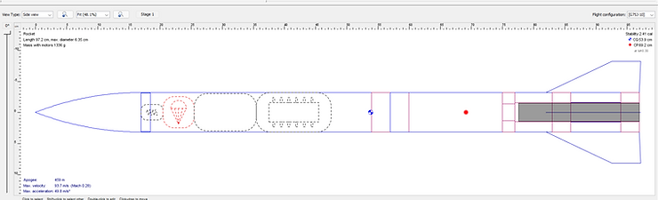

January 2022
Dev Log 6
Accomplishments in January 2022
Again not much progress was made this month. In terms of software, most of January consisted of me working out how to communicate with my SPI flash chip and figuring out the most suitable library to use. I also fixed the previous issues with my Kalman filter and got it working! The issue was that the equation for the Kalman Gain was wrong. Other than software I spent some time refining my previous AltusAer OpenRocket simulation and design which was long overdue for an update.
A couple noteworthy changes were also made to the website

Goals for February 2022
In February I intend on finishing the flight software now that only the state machine is left, and test the software as much as I can on the ground.
I also intend on designing a CAD model of AltusAer and building it as well (and documenting the build process on video). I would also like to put together proper documentation going over all the specific details on AltusAer.